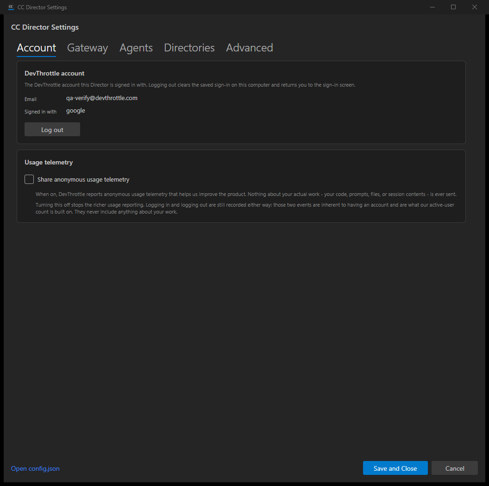
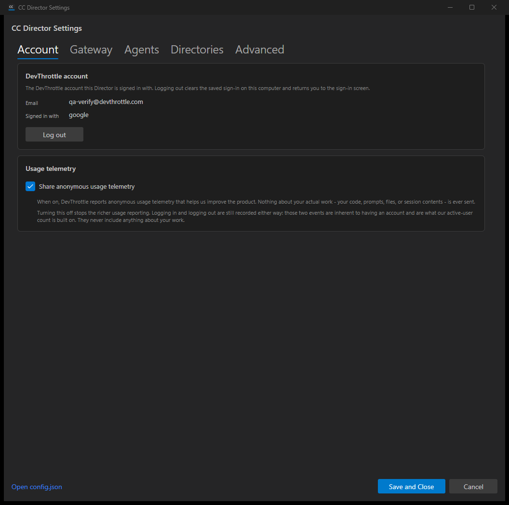
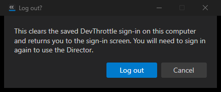

| # | Criterion | Expected | Actual (observed) | Result |
|---|---|---|---|---|
| AC1 | Account area shows the signed-in identity (email and provider) for a stored credential. | Email and provider from the cached token displayed. | Settings > Account shows Email = qa-verify@devthrottle.com, Signed in with = google -
exactly the claims in the seeded token. UI Automation read confirmed the text values; log shows
[JwtIdentityReader] Read: identity resolved (provider=google), no network call. |
PASS |
| AC2 | Log out clears the credential store (#583 check false), records a logout event; next start shows the gate. | Credential blob removed; logout event appended; gate shown. | Clicked Log out -> confirm dialog -> confirmed. devthrottle-credential.bin deleted
(exists=False), a {"Kind":"logout"} line appended to devthrottle-auth-events.jsonl,
and the Director returned to the "Sign in to DevThrottle" gate (AccountGateScreen logged
"no DevThrottle credential on this install; main window blocked"). With the store empty,
AccountGatePolicy.Decide returns Block, so the next start shows the gate. |
PASS |
| AC3 | Toggle defaults to on, persists to config.json under a settings key, reads back after a restart. | Default ON; persists telemetry.enabled; reads back. |
With no persisted value the toggle read ON (UI Automation ToggleState=On; IsEnabled()=True).
Toggling off + Save wrote telemetry.enabled=false to config.json; reopening read back
Off. The non-lossy merge preserved all other config sections (11 original keys intact). |
PASS |
| AC4 | With toggle off, richer usage reporting does not fire while login/logout events still do. | Richer usage suppressed; auth floor still records. | Re-ran the proof harness independently against an isolated config root: toggle OFF ->
UsageTelemetry.Record returned False and wrote nothing to the usage sink, while
AuthEventLog still recorded both logged-in and logout (2 events). Toggle ON -> the richer path
wrote 1 usage event. Backed by 74 passing Account unit tests. |
PASS |
| AC5 | Toggle copy is honest about what is always recorded versus what the toggle controls. | Copy states login/logout always recorded; nothing about work sent. | The Usage telemetry card states: "Nothing about your actual work - your code, prompts, files, or session contents - is ever sent" and "Logging in and logging out are still recorded either way: those two events are inherent to having an account ... They never include anything about your work." | PASS |
AC1 + AC5 - Account tab: identity (email + google) and honest telemetry copy.

AC3 - telemetry toggle defaults ON (no persisted value).

AC2 - logout confirm dialog.

AC2 - returned to the account gate after logout (no restart).

dotnet build cc-director.sln -> Build succeeded, 0 Warning(s), 0 Error(s).TerminalVerificationIntegrationTests (terminal-content session matching). These are
pre-existing, environment-dependent flakes driven by which Claude transcript files happen to be on the machine
(the matcher returned a different-but-valid session GUID); they pass on a clean checkout, are unrelated to the
Account/Telemetry/Settings code this PR touches, and belong to the category already quarantined in commit 1567bad
(#566). Not a regression from this change.